実アプリを撮影した変更前後。別のデザイン案ではありません。撮影時刻と住民の歩行位置は異なります。
候補 living-fantasy-garden-v2 / 保存21 / 学習v8。描画の形状・素材・照明・解像度を保持。実機と利用者評価は未確認。
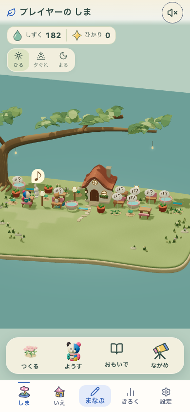
初回→学習→庭→家→offline再開。詳細は各captureの版を持つreportへ。

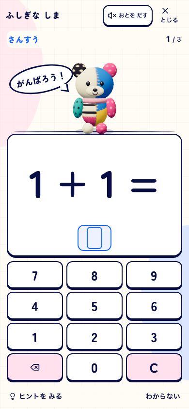
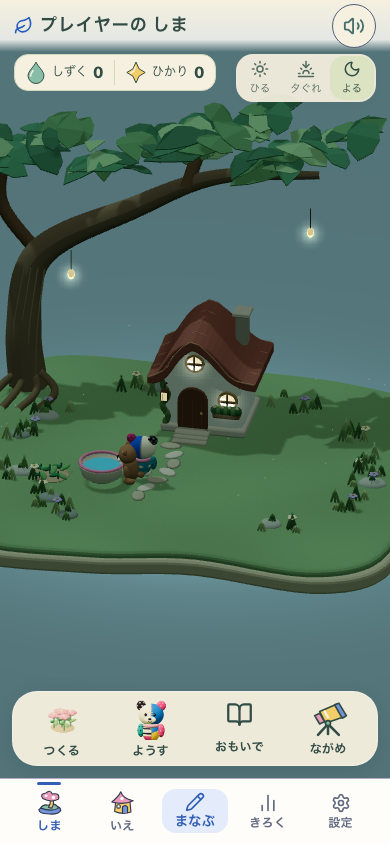
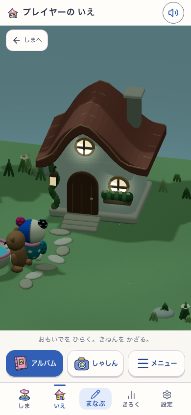

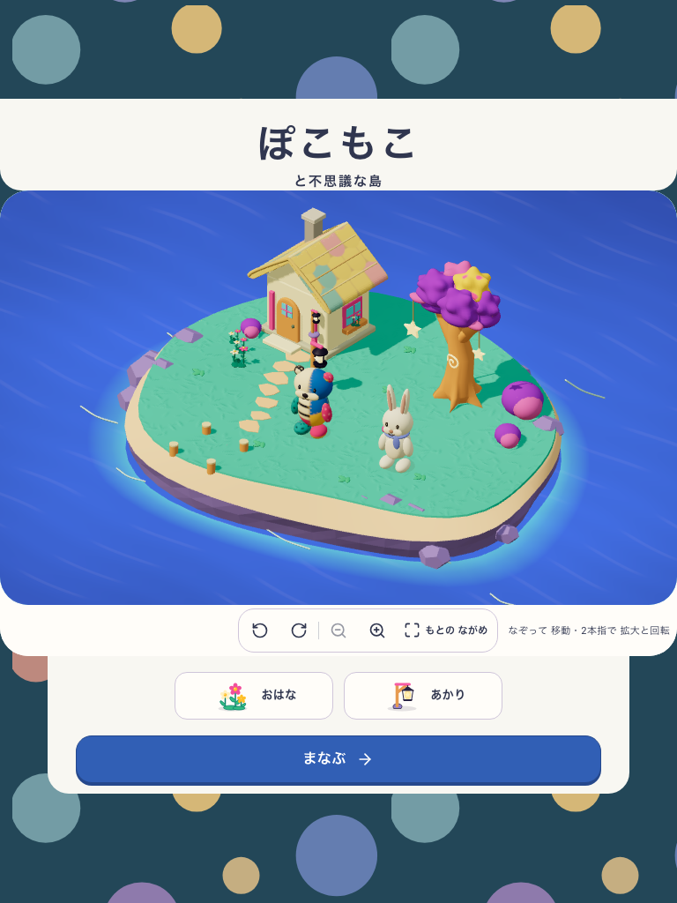
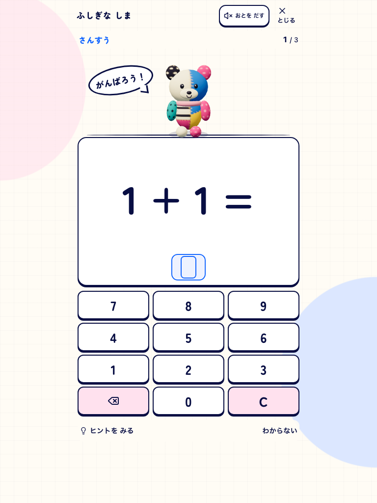
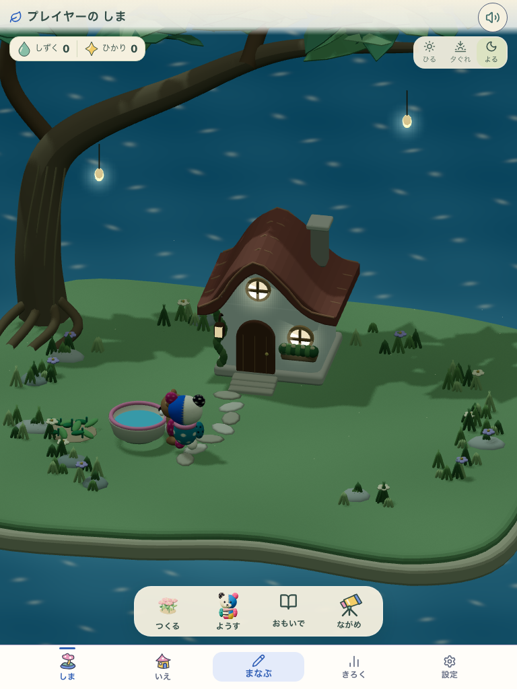
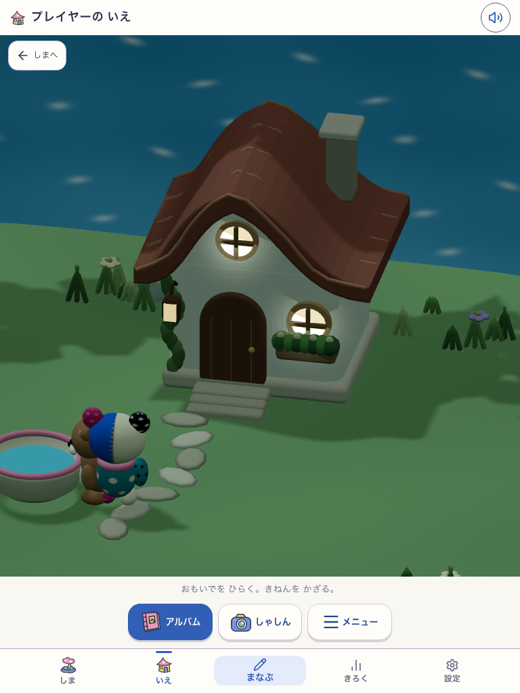
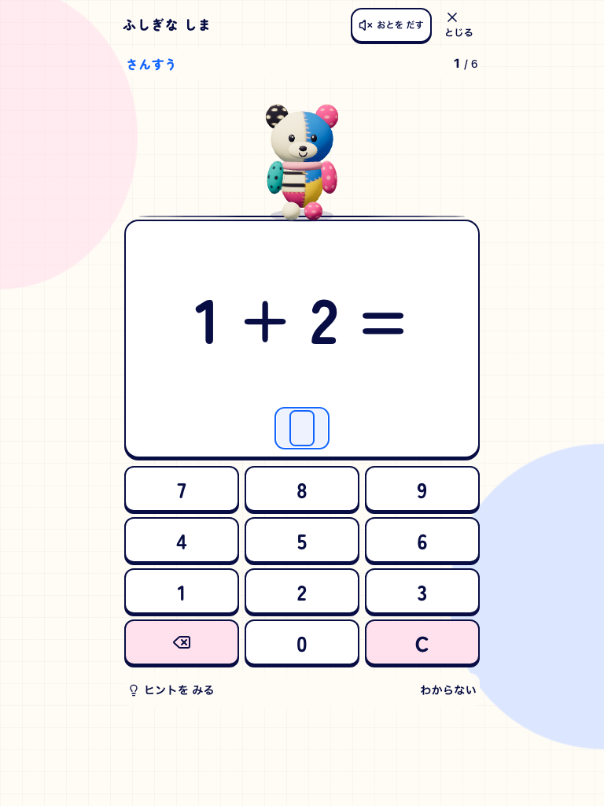
b2a39192・公開URLで実操作。版と検証記録

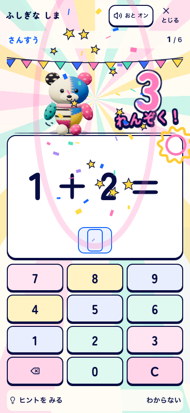
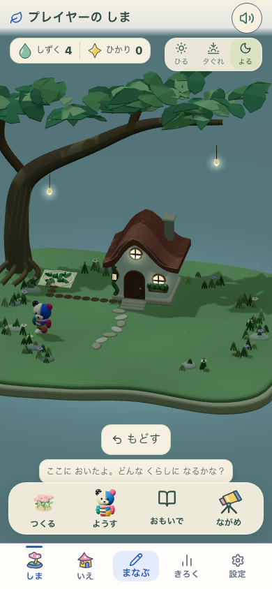
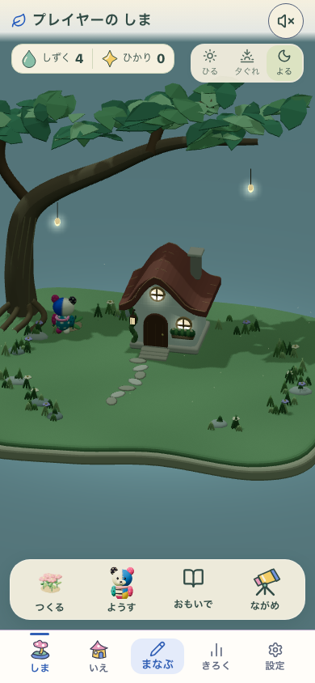
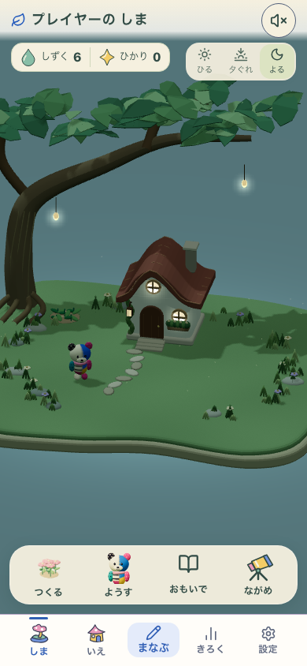

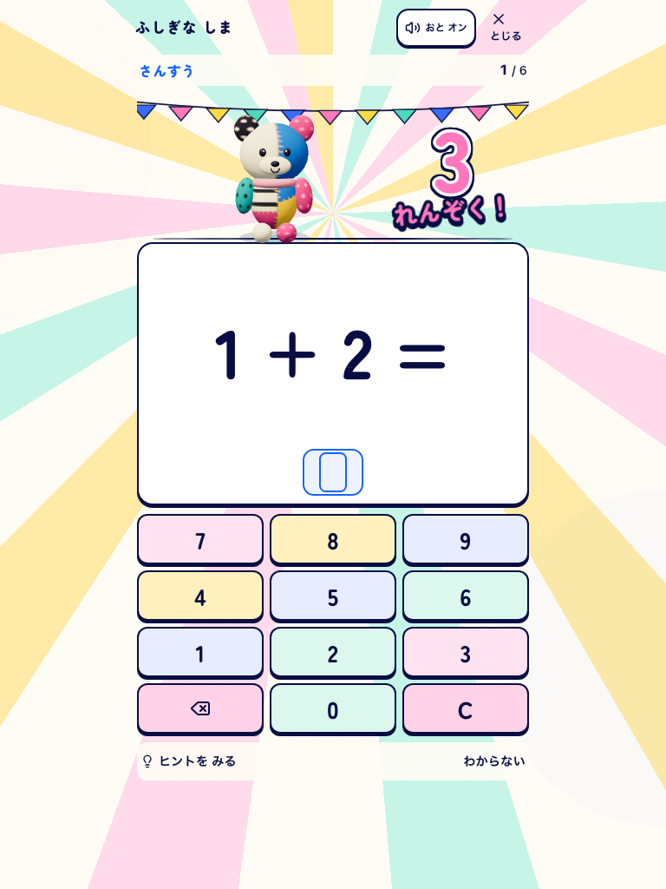
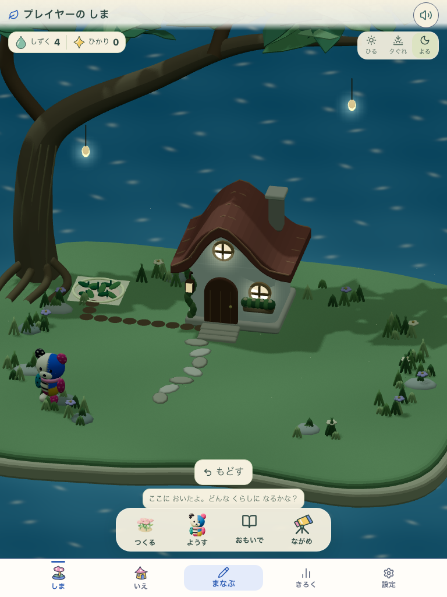
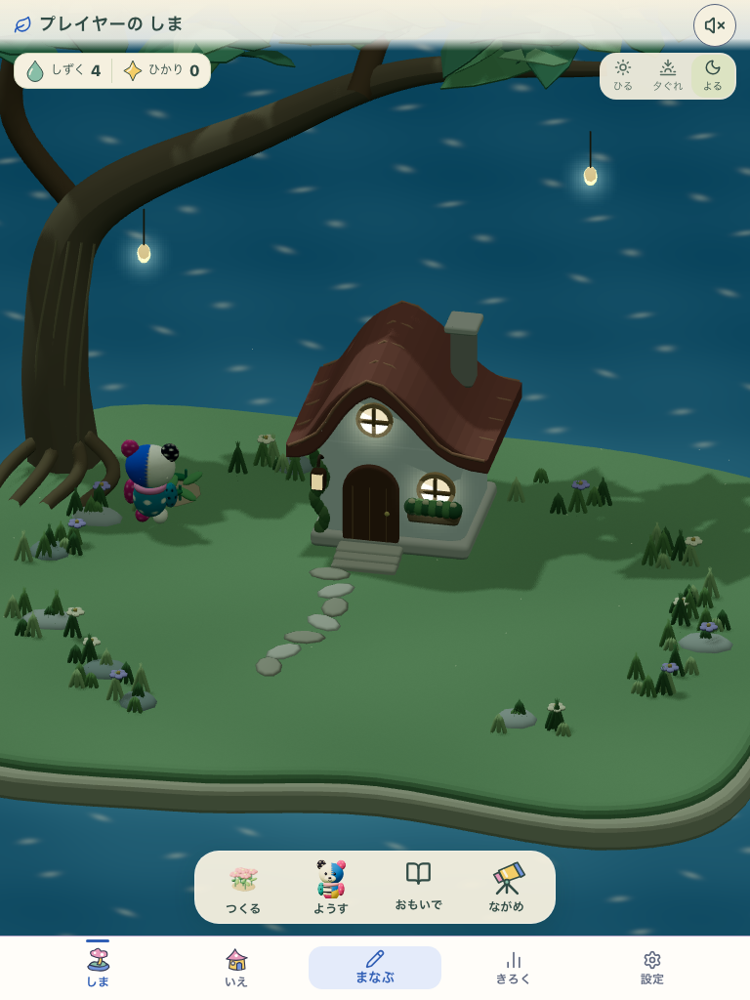